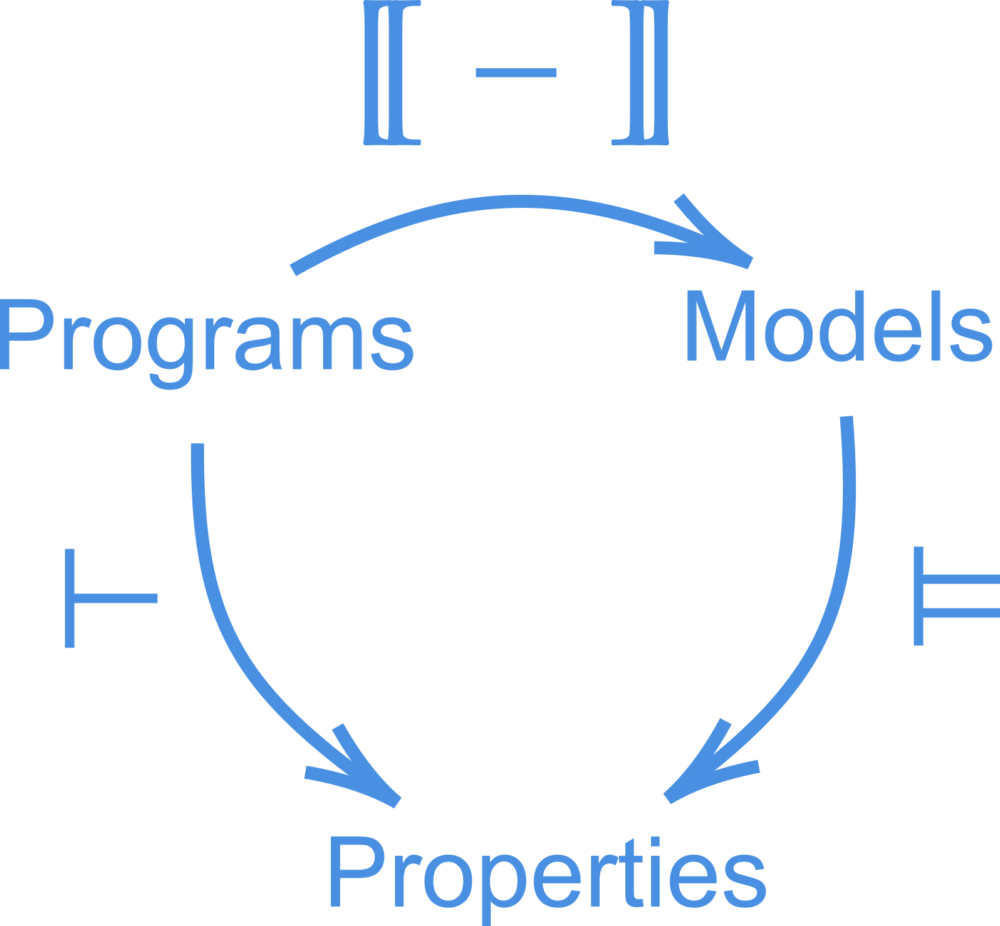
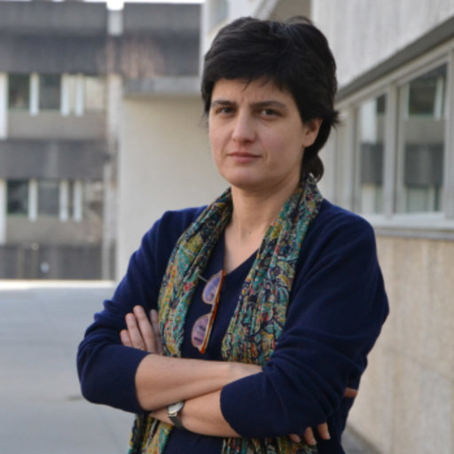
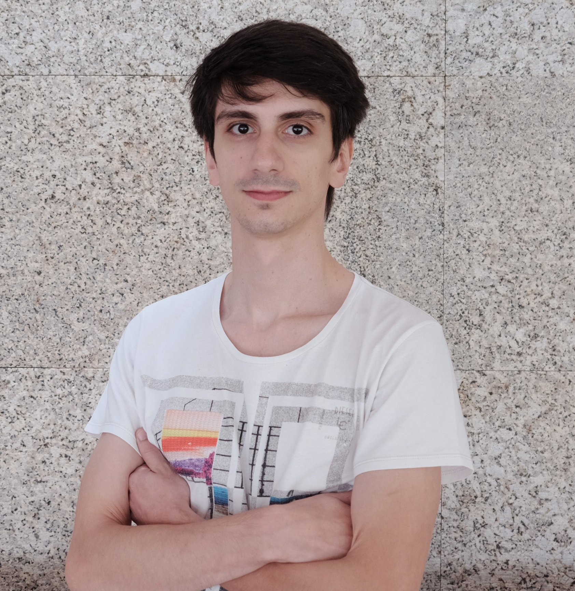
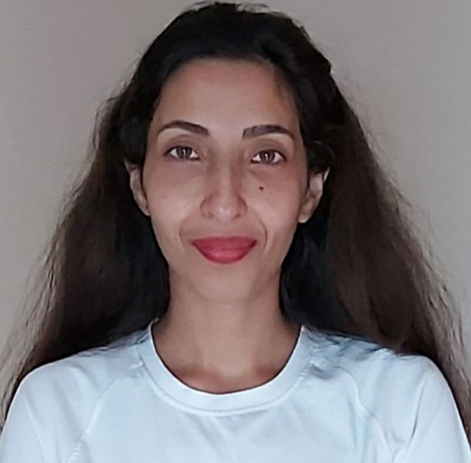

About
We are a research group on theoretical computer science and formal methods. Our core topics are:
- Program semantics and verification
- Model checking
- Algebra of Programming
- Cyber-physical systems
- Quantum computing
- Cryptography
We have a long scientific tradition, significant links to national industry, and a deep involvement in teaching activities. We also have an extensive track record on attracting competitive funds from different agencies.
If you are interested in working with us do get in touch!! The summing picture of all our research is given by the diagram below.

We are part of HASLab, a software laboratory at University of Minho associated to INESC TEC. We are also articulated with the research group Quantum and Linear-Optical Computation Group, hosted by INL, the International Iberian Nanotechnology Laboratory.
Staff
-

Full Professor at INESC TEC, Univ. Minho.
- Formal methods
- Relational and algebraic methods
- Software specification and engineering
- Functional programming
-

Full Professor at INESC TEC, Univ. Minho, and INL.
- Software components, services and architectures
- Program and design calculi
- Coalgebra theory and coinductive reasoning
- Modal and hybrid logics
-
Associate professor at INESC TEC, Univ. Minho.
- Functional programming
- Algorithmics
-
Associate professor at INESC TEC, Univ. Minho.
- Programming Languages Design
- Software Analysis and Evolution
-

Associate professor at INESC TEC, Univ. Minho
- Interactive Systems Engineering
- Formal Methods
- Software Engineering
- Human-Computer Interaction
- 
Auxiliar professor at INESC TEC, Univ. Minho.
- Program Verification
- Functional Programming
-

-

-

Auxiliar professor at INESC TEC, Univ. Minho
- Programming languages
- Cyber-Physical Systems
- Quantum Computing
Postdocs and PhD Students
-

-

-

-

- 
-
PhD student at INESC TEC and Univ. Minho.
- Quantum Computing
- Machine Learning
- Reinforcement Learning
- Artificial Intelligence
-
PhD student at University of Aveiro.
- Quantum Computing
- Logic, particularly modal and fuzzy logic
- Model verification
- Category theory and Coalgebra
- 
-

PhD student at INESC TEC and Univ. Minho.
- Formal Methods
- Natural Language Processing
- Software Engineering
Research Associates
-

PhD researcher at INESC TEC, Univ. Minho.
- Dynamic logics
- Contract-based design
- Algebraic structures
-

Post-Doc at CISTER
- Software engineering
- Coordination models
- Wireless sensor networks
- Product line engineering
- Functional programming
- Programming in Scala
-

Assistant professor at CIDMA.
- Formal specification of software
- Combination and systematic generation of logics
- Modal/hybrid/dynamic logics
- Algebraic specification
-

-

Associate professor at Univ. Aveiro.
- Algebraic logic
- Modal logic
- Algebraic specification of abstract data types
- Supported teaching and Elearning
Former members
- Guillermina Cledou (2022)
- Carlos Tavares (2022)
- Sofia Oliveira (2020)
- Paulo Ribeiro (2020)
- Afonso Rodrigues (2020)
- Rúben Cruz (2018)
- Rita Vale (2017)
- Tiago Loureiro (2017)
- Alejandro Sanchez (2016)
Key publications
Fredrik Dahlqvist and Renato Neves. An internal language for categories enriched over generalised metric spaces. In Florin Manea and Alex Simpson, editors, 30th EACSL Annual Conference on Computer Science Logic, CSL 2022, February 14-19, 2022, Göttingen, Germany (Virtual Conference), volume 216 of LIPIcs, pages 16:1--16:18. Schloss Dagstuhl - Leibniz-Zentrum für Informatik, 2022. [ bib | DOI | http ]
J.C. Campos, C. Fayollas, M.D. Harrison, C. Martinie, P. Masci, and P. Palanque. Supporting the analysis of safety critical user interfaces: an exploration of three formal tools. ACM Transactions on Computer-Human Interaction, 27(5), August 2020. [ bib | DOI | .pdf ]
Sergey Goncharov, Renato Neves, and José Proença. Implementing hybrid semantics: From functional to imperative. In Ka I Pun, Adenilso da Silva Simão, and Volker Stolz, editors, Theoretical Aspects of Computing - ICTAC 2020 - 17th International Colloquium, Macau S.A.R., China, October 31 - November 30, 2020, Proceedings, volume 12545 of Lecture Notes in Computer Science. Springer, 2020. [ bib | .pdf ]
M.D. Harrison, P. Masci, and J.C. Campos. Verification templates for the analysis of user interface software design. IEEE Transactions on Software Engineering, 45(8):802--822, August 2019. [ bib | DOI | .pdf ]
Sergey Goncharov, Julian Jakob, and Renato Neves. A semantics for hybrid iteration. In Sven Schewe and Lijun Zhang, editors, 29th International Conference on Concurrency Theory, CONCUR 2018, September 4-7, 2018, Beijing, China, volume 118 of LIPIcs, pages 22:1--22:17. Schloss Dagstuhl - Leibniz-Zentrum für Informatik, 2018. [ bib | DOI | http ]
J.C. Campos, M. Sousa, M. Alves, and M.D. Harrison. Formal verification of a space system's user interface with the ivy workbench. IEEE Transactions on Human-Machine Systems, 46(2):303--316, 2016. [ bib | DOI | .pdf ]
This file was generated by bibtex2html 1.99.
Recent publications
M.D. Harrison, P. Masci, and J.C. Campos. Balancing the formal and the informal in user centred design. Interacting with Computers, 33(1):55--72, January 2021. [ bib | DOI ]
C. Silva, J. Vieira, J.C. Campos, R. Couto, and A.N. Ribeiro. Development and validation of a descriptive cognitive model for a low code development platform. Human Factors, 63(6):1012--1032, 2021. [ bib | DOI ]
A. Canny, D. Navarre, J.C. Campos, and P. Palanque. Model-based testing of post-wimp interactions using petri-nets. In E. Sekerinski et al., editor, Formal Methods. FM 2019 International Workshops, volume 12232 of Lecture Notes in Computer Science, pages 486--502. Springer, 2020. [ bib | DOI ]
Dirk Hofmann, Renato Neves, and Pedro Nora. Limits in categories of vietoris coalgebras. Math. Struct. Comput. Sci., 29(4):552--587, 2019. [ bib | DOI | http ]
Sergey Goncharov and Renato Neves. An adequate while-language for hybrid computation. In Ekaterina Komendantskaya, editor, Proceedings of the 21st International Symposium on Principles and Practice of Programming Languages, PPDP 2019, Porto, Portugal, October 7-9, 2019, pages 11:1--11:15. ACM, 2019. [ bib | DOI | http ]
Renato Neves and Luís Soares Barbosa. Languages and models for hybrid automata: A coalgebraic perspective. Theor. Comput. Sci., 744:113--142, 2018. [ bib | DOI | http ]
This file was generated by bibtex2html 1.99.
Tools
Lince - Modelling and and simulation of hybrid programs.
IFTA: Interface Featured Timed Automata - Implementation of the Interface Featured Timed Automata (IFTA).
QWAK: Quantum Walk Analysis Kit - Python package and GUI for simulating continuous-time quantum walks.
IVY workbench - A model based tool for the analysis of interactive systems designs.
Recent projects
-

Quantitative methods for cyber-physical programming; Started in 2022.
-

Distributed Architectures: Variability and Interaction for Cyber-Physical Systems; 2018-2022.
-

Coalgebraic Modeling and Analysis for Computational Synthetic Biology; 2018-2021
-
Banksy -->
Paraconsistent inference for research in age-related macular degeneration; 2025-2028
-

Dynamic logics for cyber-physical systems; 2016–2018.
-

Trustworthy Software Design with Alloy; 2016–2018.
Collaboration
We were also involved in the following projects.-

Lightweight computation for networks at the edge; 2017–2020.
-
(P2020 NORTE-45-2015-23) Harnessing EGOV for smart governance: Foundations and tools, since May, 2016.
Past Projects
Projects
- NASONI: Heterogeneous software coordination: Foundations, methods, tools; 2013-2015.
- BestCase RL8: Languages And Tools for Critical Real-time Systems; 2013-2015.
- PT-FLAD Chair on smart Cities & Smart Governance: Chair jointly supported by PT and FLAD; 2016-2019.
Courses
Ph.D. level
Cyber-Physical Computation (2019/20)Quantum Computing (2020/21, 2019/20)
Algebraic and Coalgebraic Models in Software Development (2016/17)
M.Sc. level
Cyber-Physical Computation (2021/22)Formal methods in programming (2021/22)
Software architecture and Calculi (2020/21, 2019/20, 2018/19, 2017/18, 2016/17, 2015/16)
Quantum Logic (2020/21, 2019/20, 2018/19, 2017/18)
Quantum Computing (2022/23, 2021/22, 2020/21, 2019/20, 2018/19, 2017/18, 2016/17)
Information Systems by Calculation (2021/22)
Trustworthy Interactive Systems (overview)
B.Sc. level
Interaction and Concurrency (2020/21, 2019/20, 2018/19, 2017/18, 2016/17)Program Calculus (2021/22)
Software Systems Development (overview)
Human-Computer Interaction (overview)
Research Opportunities
Here is a selection of possible projects for M.Sc. students that would like to work with us. We are also open for discussion about other topics. Note that we have a few grants that can pay for most of the ideas presented in these projects. If you are interested, just come and talk to us.